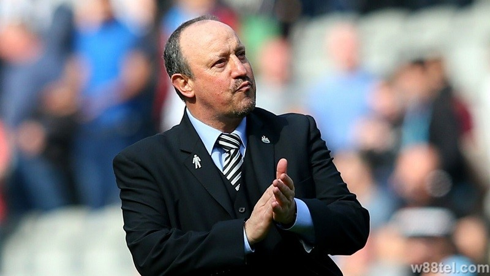
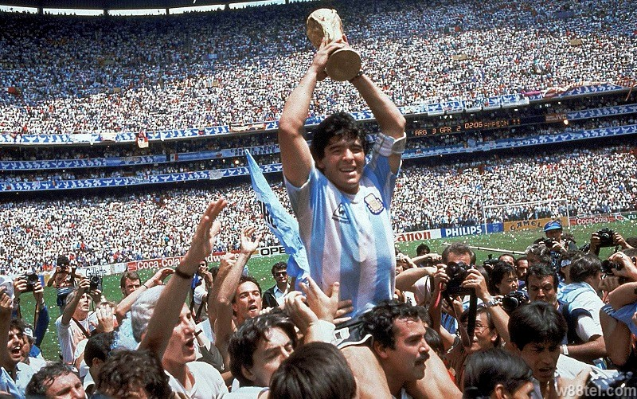
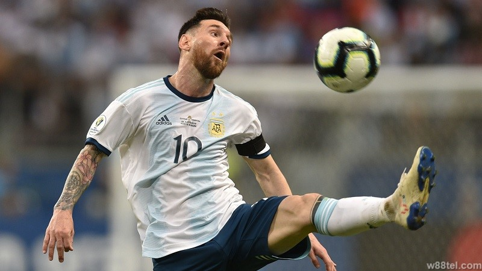
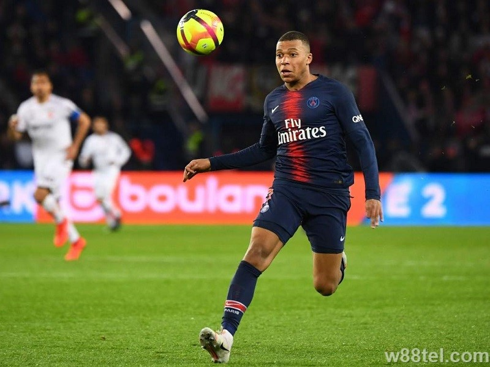
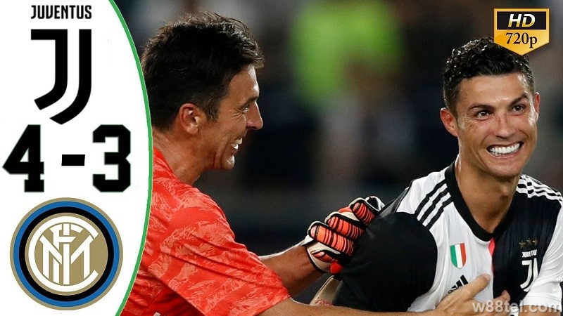

Tin Thể Thao
Tin tức giải ngoại hạng anh mới nhấtTOP 4 huấn luyện viên lận đận nhất trong làng bóng đá Châu Âu
1/ Rafael Benitez Nhận được sự kỳ vọng rất lớn khi quay trở lại mái nhà Real Madrid với tư cách là HLV trưởng, thế nhưng chỉ sau 6 tháng, chính Kền kền trắng lại phũ phàng tống khứ vị chiến lược gia tuổi 55 ra đường sau quãng thời gian không hợp ý với nhau. Nhưng không thể phủ nhận tài năng của HLV Benitez khi vô địch C1 cùng Liverpool năm 2005, hai lần giành cúp Europa League cùng Valencia và Chelsea. Ngoài ra ông cũng nhận danh hiệu HLV xuất sắc của UEFA hai mùa giải liên
TOP 5 bàn thắng quan trọng nhất trong lịch sử bóng đá thế giới
1/ Maradona – World Cup 1986: Vị trí thứ nhất thuộc về pha lập công được gọi là “Bàn tay của Chúa” tại tứ kết World Cup 1986, huyền thoại Maradona đã ghi một bàn thắng gây tranh cãi nhất trong lịch sử bóng đá thế giới. Tại phút thứ 51 trong một tình huống tranh chấp bóng bổng, Cậu bé vàng của Argentina đã giơ tay đánh bóng vào lưới trong sự ngỡ ngàng của các CĐV trên sân lúc bấy giờ. Pha lập công đó tạo tiền đề để ĐT Argentina tiếp tục vượt qua Bỉ và Đức
TOP 4 ứng cử viên hàng đầu cho Quả bóng Vàng 2019
1/ Virgil Van Dijk: Nếu như huyền thoại Eric Cantona từng làm nên điều kì diệu cho MU ở quá khứ thì bóng đá hiện tại chỉ có thể gọi lên cái tên Van Dijk đang cống hiến cho Liverpool. Mùa giải 2018/19 đã đánh dấu sự thành công của đội bóng Cảng khi vô địch Cúp C1 Châu Âu và chỉ chịu thua sát nút 1 điểm trên BXH Premier League trước Man City quá xuất sắc. Và phần lớn thành công của họ đến từ sự chắc chắn nơi hàng thủ mà ở đó thủ lĩnh Van Dijk
TOP 5 cầu thủ trẻ tiềm năng nhất bóng đá thế giới hiện nay
1/ Vinicius Junior – 18 tuổi Tài năng của Vinicius là không thể phủ nhận khi anh từng khiến Real Madrid phải móc hầu bao khoảng 45 triệu euro để chiêu mộ anh khi mới 16 tuổi, mặc dù thời điểm đó Vinicius chưa đá 1 trận đấu chính thức nào cho CLB Flamengo. Tại mùa giải 2018/19 vừa qua, Vinicius chưa có nhiều cơ hội để thể hiện tài năng thế nhưng anh cũng đã kịp để lại dấu ấn đầy hứa hẹn. Thời điểm mà Real đang suy sụp thì cầu thủ trẻ Brazil thi đấu vẫn rất
[Video] Juventus 1-1 Inter Milan (pen 4-3): R7 lập công
>> Soi kèo Juventus vs Inter Milan W88 – ICC: Rực lửa tại Nam Kinh Admin w88 đã dự đoán chính xác là kèo xỉu, còn tỉ số 1-1 thì “hơi” sai 1 chút thôi ^^. Trận derby Italia trong khuôn khổ ICC 2019 giữa Juventus và Inter Milan đã kết thúc 90 phút chính thức với tỷ số hòa 1-1, buộc phải phân định thắng thua trên loạt sút luân lưu. Ngôi sao người Bồ tiếp tục thể hiện giá trị của mình khi tỏa sáng kịp thời giúp Juventus đánh bại Inter Milan. Tiếp cận trận đấu với